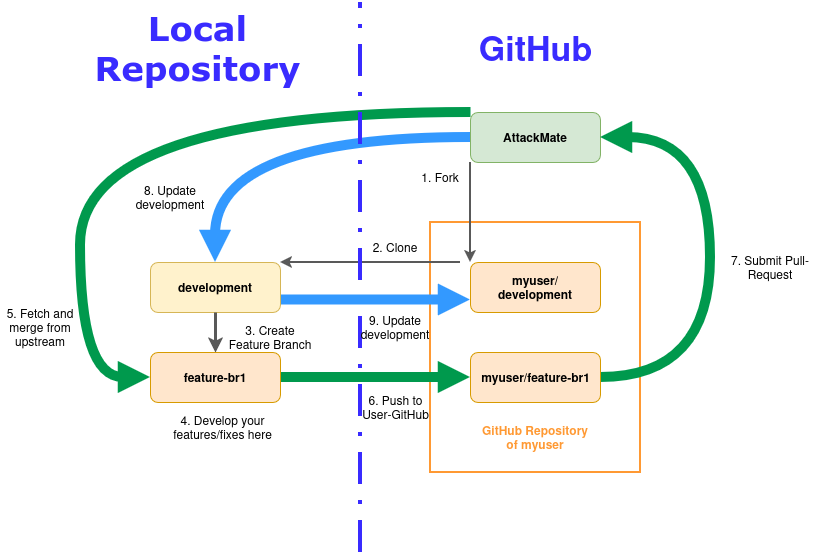

Contributing
We’re happily taking patches and other contributions. Below is a summary of the processes we follow for any contribution.
Bug reports and enhancement requests
Bug reports and enhancement requests are an important part of making attackmate more stable and are curated through Github issues. Before reporting an issue, check our backlog of open issues to see if anybody else has already reported it. If that is the case, you might be able to give additional information on that issue. Bug reports are very helpful to us in improving the software, and therefore, they are very welcome. It is very important to give us at least the following information in a bug report:
Description of the bug. Describe the problem clearly.
Steps to reproduce. With the following configuration, go to.., click.., see error
Expected behavoir. What should happen?
Environment. What was the environment for the test(version, browser, etc..)
For reporting security-related issues, see SECURITY.md
Working on the codebase
To contribute to this project, you must fork the project and create a pull request to the upstream repository. The following figure shows the workflow:

1. Fork
Go to https://github.com/ait-testbed/attackmate.git and click on fork. Please note that you must login first to GitHub.
2. Clone
After forking the repository into your own workspace, clone the development branch of that repository.
git clone -b development git@github.com:YOURUSERNAME/attackmate.git
3. Create a feature branch
Every single workpackage should be developed in it’s own feature-branch. Use a name that describes the feature:
cd attackmate
git checkout -b feature-some_important_work
4. Develop your feature and improvements in the feature-branch
Please make sure that you commit only improvements that are related to the workpage you created the feature-branch for. See the section Development for detailed information about how to develope code for attackmate.
Note
attackmate uses prek to ensure code quality. Make sure that you use it properly.
5. Fetch and merge from the upstream
If your work on this feature-branch is done, make sure that you are in sync with the branch of the upstream:
git remote add upstream git@github.com:ait-testbed/attackmate.git
git pull upstream development
If any conflicts occur, fix them and add them using git add and continue with the merge or fast-forward.
Additional infos:
6. Push the changes to your GitHub-repository
Before we can push our changes, we have to make sure that we don’t have unnecessary commits. First checkout our commits:
git log
After that we can squash the last n commits together:
git rebase -i HEAD~n
Finally you can push the changes to YOUR github-repository:
git push
Additional documentation:
7. Submit your pull-request
Use the GitHub-Webinterface to create a pull-request. Make sure that the target-repository is ait-testbed/attackmate.
If your pull-request was accepted and merged into the development branch continue with Update your local main branch. If it wasn’t accepted, read the comments and fix the problems. Before pushing the changes make sure that you squashed them with your last commit:
git rebase -i HEAD~2
Delete your local feature-branch after the pull-request was merged into the development branch.
8. Update your local main branch
Update your local development branch:
git fetch upstream development
git checkout -b development
git rebase upstream/development
Additional infos:
9. Update your main branch in your github-repository
Please make sure that you updated your local development branch as described in section 8. above. After that push the changes to your github-repository to keep it up2date:
git push